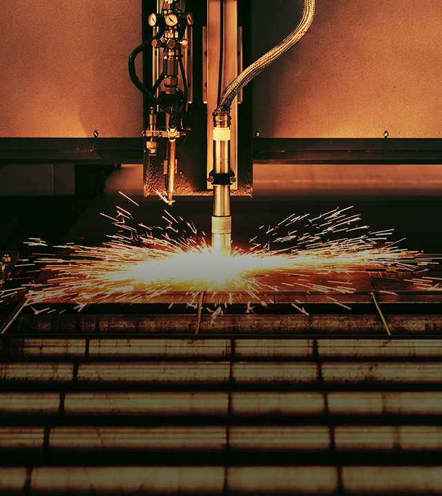
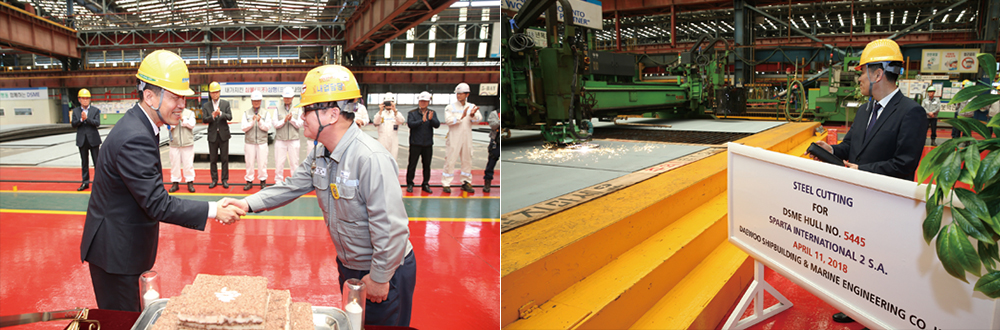
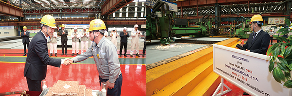
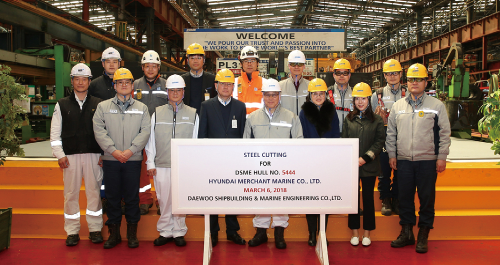
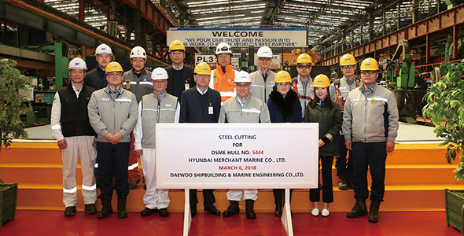

와 제 롤모델이 잡스에요!!! 아이폰 첫 출시되고 나서부터 계속 아이폰 쓰고 있는데 잡스가 너무 그리워요ㅠㅠ 지금은 돈만 벌려고 하는 것 같아서 디자인 발전도 없고ㅠㅠ와 제 롤모델이 잡스에요!!! 아이폰 첫 출시되고 나서부터 계속 아이폰 쓰고 있는데 잡스가 너무 그리워요ㅠㅠ 지금은 돈만 벌려고 하는 것 같아서 디자인 발전도 없고ㅠㅠ와 제 롤모델이 잡스에요!!! 아이폰 첫 출시되고 나서부터 계속 아이폰 쓰고 있는데 잡스가 너무 그리워요ㅠㅠ 지금은 돈만 벌려고 하는 것 같아서 디자인 발전도 없고ㅠㅠ와 제 롤모델이 잡스에요!!! 아이폰 첫 출시되고 나서부터 계속 아이폰 쓰고 있는데 잡스가 너무 그리워요ㅠㅠ 지금은 돈만 벌려고 하는 것 같아서 디자인 발전도 없고ㅠㅠ와 제 롤모델이 잡스에요!!! 아이폰 첫 출시되고 나서부터 계속 아이폰 쓰고 있는데 잡스가 너무 그리워요ㅠㅠ 지금은 돈만 벌려고 하는 것 같아서 디자인 발전도 없고ㅠㅠ
HMM 인사이드 2
30만톤급 초대형 유조선 스틸 커팅식
유니버설 5형제,
건조의 서막을 울리다
건조의 서막을 울리다

2019년 인수 예정인 초대형 유조선(VLCC)의 건조 공정이 시작되었다. 거제도에 위치한 대우조선해양에서 3개월에 걸쳐 ‘유니버설 리더호'와 '유니버설 위너호', 그리고 '유니버설 파트너호'의 스틸 커팅식을 가진 것이다. 총 5척의 VLCC는 올초 국내 임직원 대상으로 실시한 ‘VLCC 선명 공모전’을 통해 이름을 갖게 됐다. 건조의 서막을 울리는 스틸 커팅식에 참가한 신조기술팀 홍석우 감독이 그날의 현장을 직접 소개한다.
글·사진
홍석우 감독 (신조기술팀)


최종철 해사총괄(상무)이 참석해 2차선 ‘유니버설 위너호’ 컷팅식 세레머니를 가졌다.
스틸 커팅식은 선박의 도면 설계가 끝난 뒤, 건조에 사용되는 선체 외벽용 강재를 처음으로 자르는 세리머니를 통해 선박이 안전사고 없이 무사히 인도되도록 기원하는 행사이다. 또, 첫 강재를 절단함으로써 실제 선박 건조의 시작을 알리며 현장에서의 건조 공정이 시작되는 것이다. 건물을 지을 때 ‘첫 삽을 뜨는 것’과 비슷한 의미라고 할 수 있다.
처음으로 ‘유니버설 리더호’의 스틸 커팅식이 진행되는 날 ‘HMM 선박 건조 현장사무소(HMM-DSME Site)’ 개소식도 함께 열렸다. 개소식에서 현대상선 한병국 R&D센터장(부장)은 대우조선해양 관계자 및 영국 선급(LR) 그리고 한국 선급과 미팅을 갖고 다시 한 번 긴밀한 협조를 약속하기도 했다. 간략하게 개소식을 마친 뒤, 관계자들은 스틸 커팅식이 열리는 DSME 가공 공장으로 이동했다.
이날 행사에는 현대상선 한병국 R&D 센터장 및 강은수 신조기술팀 감독을 비롯한 대우조선해양 선박사업본부장 손관원 전무 외 각 부서장 그리고 영국 선급 지부장, 한국 선급 지부장 등 여러 관계자들이 참석했다. 현장사무소 매니저인 강은수 감독이 프라즈마 절단기를 점화하면서 커팅식의 세리머니가 시작되었다. 이번 프로젝트의 첫 강재가 절단되는 순간이었다. “드디어 오랜 기간 동안 준비한 선박 건조가 시작되는구나”하는 설레는 순간이었다.


첫 스틸 커팅식을 갖은 뒤 관계자들의 기념사진 촬영
스틸 커팅으로 건조가 시작된 선박은 약 11개월간 용골 거치1 및 진수2 등의 주요 공정을 거쳐 2019년 1월부터 순차적으로 인도될 예정이다. 2차선인 ‘유니버설 위너호’와 3차선인 ‘유니버셜 파트너호’도 지난 4월과 5월에 스틸 커팅식을 가졌으며, 나머지 4차선인 ‘유니버설 크리에이터호’와 5차선인 ‘유니버설 빅터호’도 하반기 7월과 11월 순차적으로 스틸 커팅식을 가질 예정이다.
이번 프로젝트는 정부의 해운산업 지원 정책의 일환으로 건조되는 VLCC 선박으로 해운업과 조선업의 동반성장 효과를 넘어 해운, 조선, 화주 간 상호협력으로 이어지는 첫 프로젝트인 만큼 최고의 선박을 인도받을 수 있도록 신조기술팀을 포함한 해사 부문 등이 역량을 집중할 것이다.
본 프로젝트가 성공적으로 마무리되어 5척의 VLCC 선명처럼 ‘현대상선이 고객에게 신뢰받는 파트너(Partner)로서 글로벌 해운업의 새로운 가치를 창조(Creator)하는 승리자(Leader, Winner, Victor)’로 거듭날 수 있길 기대해본다.
1용골 거치스틸 커팅 후 잘라진 철판으로 조립한 블록을 도크 안에 설치하는 공정
2진스틸 커팅 후 잘라진 철판으로 조립한 블록을 도크 안에 설치하는 공정
-
최고예요
322
-
좋아요
322
-
슬퍼요
322
-
그저 그래요
322
-
화나요
322